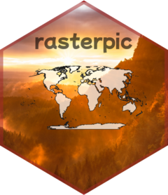

Authors and Citation
Authors
-
Diego Hernangómez. Author, maintainer, copyright holder.
Citation
Source: inst/CITATION
Hernangómez D (2024). rasterpic: Convert Digital Images into SpatRaster Objects. doi:10.32614/CRAN.package.rasterpic, https://dieghernan.github.io/rasterpic/.
@Manual{R-rasterpic,
title = {{rasterpic}: Convert Digital Images into {SpatRaster} Objects},
doi = {10.32614/CRAN.package.rasterpic},
author = {Diego Hernangómez},
year = {2024},
version = {0.2.6},
url = {https://dieghernan.github.io/rasterpic/},
abstract = {Generate SpatRaster objects, as defined by the terra package, from digital images, using a specified spatial object as a geographical reference.},
}